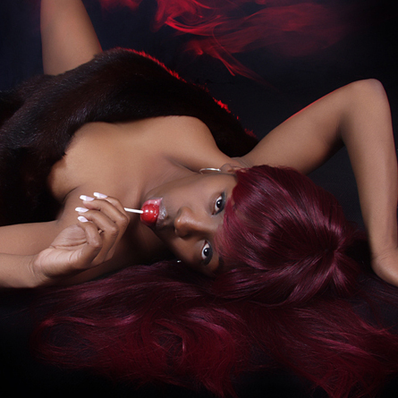

Hello and welcome to the Riskay website.
This is a fan project dedicated to archiving and preserving her career.
If you have any files that I do not have, please send them my way! guyfilmoutsold@gmail.com

Many people may make an immediate assumption that Riskay “The Drama Queen”, a female rapper from Florida that gained a lot of attention, after her release of one of the most controversial songs of the decade “Smell Yo D*ck”, is a one hit wonder. Many people are thinking; who is this person just coming into the Rap music industry and “blowing up?” It seems as if she came out of nowhere and she has drawn mega attention across the globe from it. However, Riskay will be the first to tell you that she has paid her dues in this game just the same as many other artists that has acquired success. Every artist has a story to tell. Riskay is not obsolete from having her own story. She has achieved the unimaginable as an independent artist from Florida that lacked the finances and major support of major players in the music industry to cosign her. Despite this she hasn’t given up and she encourages work for what they want despite their circumstances.
From the sound of her songs, and the very explicit, provocative lyrics describing cheating in relationships and comparing passion and intimacy to the likes of drug addiction, most critics first impression is to sit back astonished by her words, in shock and wonder, others chastise her and pass judgment on her for the type of artist she portrays, but in most cases, listeners become extremely inquisitive about who Riskay is, causing her Myspace page to be bombarded with hits across the world, her iTunes download sales to increase and her Youtube link to have hits and plays at an incredible number and rate. Her astounding success at being able to draw the listeners who come across her music and website is what caused one of the most prestigious papers in the world, The New York Times to label her song “Smell Yo D*ck” as “the most memorable underground hit of 2007”.
Many people ask why the name Riskay? Well from the sounds of her music you can see that Riskay is Risky. Period. “I am not afraid to take risks and try something at least once to say I did it and take a chance to get the job done, but there is a line that I will never cross. The name Riskay and the risks refer only to my music and my dedication to hard work.” Standing at five foot and two inches, she is poised, self-assured and beautiful. Never indecisive as she explains why she is known as the ‘The Drama Queen’. “That’s because I am full of drama. I am very outspoken person that has no problem letting people know when I’m not happy”.
Riskay, was born and raised in Bartow, Florida, and has been rapping for six years. Having always wanted to sing and rap and was constantly told it wouldn’t work; she remained persistent until her chance came from another rapper named Bigg Baby. He needed a female rapper to rap on some of his songs so he asked her to feature on a few of them. Riskay shortly after that she began recording her own songs but it wasn’t until she featured on a song with Florida rapper Whitedawg that her name began to grow like wildfire throughout the Florida underground rap scene. The song was titled “Pop-a-pill” and it became a smash hit in the clubs throughout Florida. This gave Riskay the motivation and determination to believe that she could make it despite being told time after time that she wouldn’t. Being the self motivated person that she is she didn’t allow the lack of beats and money to prevent her from making music. She followed up with a series of mixtape songs like “Pay Up” which she rapped on the belonged to The Young Bloodz. Riskay, later grabbed the attention of many men in the business with one of the hardest beat jacking’ by a female rapper, to Rick Ross’s “Hustling” track. By rapping on other people’s beats Riskay was able to keep her voice and name brewing in the underground music scene throughout Florida.